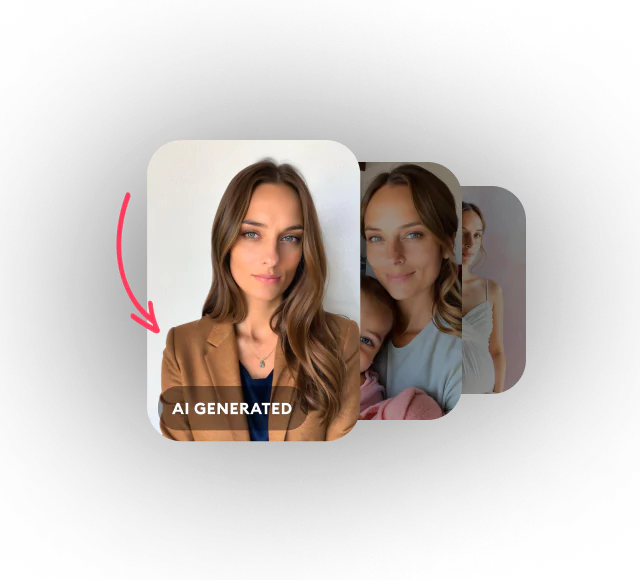

Remini 翻了个底朝天：六个官方不说的冷门玩法
大家都知道 Remini 能一键增强修照片，但降噪和增强的组合顺序、去模糊和一键增强的真正分工、免费版的"每日一图"省钱策略——这些藏在设置深处的玩法，十个用户里九个没摸透。
引子：你以为它只是个一键修图 App？
说实话，我最初接触 Remini 是从它的官网知道的，冲着"一键增强"四个字去的——手机随手拍糊了、老相册泛黄了，丢进去一秒出片，确实好用。但用了三个月之后我发现，Remini 的工具箱远不止那个大大的"增强"按钮。官方把不少真正能解决疑难杂症的功能藏在了二级菜单里，连帮助中心都没把组合逻辑讲透——先去Remini下载拿一份试试手再来看这篇也不迟。
这篇就把我这几个月翻出来的六个冷门玩法整理一下，都是翻遍Remini文档和实测对比才挖出来的干货。
隐藏玩法一：降噪和增强的顺序不能反
这绝对是 Remini 最容易搞错的操作逻辑。
夜景手持拍摄的照片最头疼——暗部全是颗粒感，还带点红绿杂色。大多数人的操作是先点一键增强再说，结果增强完噪点被 AI 当成细节一起放大，画面反而更脏，再降噪也救不回来。
正确的组合顺序是：先降噪，后增强。
Remini 的降噪工具定位很明确——专治高感光度和弱光场景的衍生物：亮度噪点、彩色噪点、还有多轮压缩产生的块状伪影。先把这些脏东西清掉，AI 在干净的画面上做增强才不会"无中生有"地把噪点当纹理重建。
什么样的照片该走这条线？夜景手持、室内弱光（餐厅灯光昏黄、婚礼跟拍）、老照片扫描件——这些噪点密集的场景，先降噪再一键增强的两步走效果比直接点增强好出一截。
隐藏玩法二：去模糊和一键增强，不是谁都能互相替代
Remini 里有两个看起来很像的工具：一键增强和去模糊锐化。很多人觉得"都是让照片变清楚，点哪个都一样"，其实不然。
一键增强是整体画质提升，它对那种"手机上传被压缩、整体画质软、没明确病灶"的照片最管用。但如果你的照片是手抖跑焦、运动拖影——构图没问题但就是发虚——一键增强的力度不够，这时候必须上专门的去模糊锐化工具。
这个工具的定位是"专治不清晰"，对边缘重建更激进。我实测过一张演唱会手抖拍的照片，一键增强跑完还是虚，去模糊锐化走一遍，演员的面部轮廓直接清晰了。
还有个分界线：模糊+分辨率低的照片，先放大再增强，反过来效果也打折扣。Remini 的工具链是有严格顺序的，别乱跳。
隐藏玩法三：免费版不是试用版，"每日一图"策略能省整个订阅费
Remini 免费版有三个限制：每天保存次数有限、增强和保存时看广告、结果带水印。但它是长期可用的正式版本，不是 7 天试用——官方没把这点写在宣传页上，大概是怕大家都不订阅了。
每日次数的具体口径不同时期有浮动，但第三方评测普遍观察到每天 3 次上下。对于每周只修一两张照片的用户来说，免费版完全够用，忍忍广告和水印就行。
如果你有一批老家庭相册要翻新但又不想订阅，有个省钱策略：每日一图，拆批完成。免费额度每天刷新，不赶时间的话把几十张照片拆成每天跑几张，几周下来也就干完了。我自己用这个策略翻完了我妈二十本相册的扫描件，省了一年的订阅费。
但有一点必须说清楚：AI 写真的水印规则和增强照片不一样——即使订阅用户也带水印，这是官方帮助中心明说的，别抱侥幸心理。
隐藏玩法四：AI 写真的批量挑片，三轮筛法比凭感觉靠谱
Remini 的 AI 写真功能一次出几十张，很多人看到结果就慌了——这么多怎么挑？我摸索出一套三轮筛法，比凭感觉一张张翻效率高太多。
第一轮先删不像的。这轮标准最严格，五官明显不像你的直接 pass，别犹豫。AI 生图的面部一致性有上限，一批几十张里总会有几张跑偏的，先清掉。
第二轮删不自然的。手部、牙齿、背景文字是 AI 生图的三个重灾区，逐张放大看——手指多一根少一根、牙齿形状怪异、背景招牌乱码，这些都是必须删的硬伤。
第三轮才是按用途挑。剩下的应该已经是五官像、没硬伤的，这时候看构图光影，适合做头像的挑表情自然的、适合发朋友圈的挑光影好看的，按需定稿。

还有个冷知识：AI 写真目前只在手机 App 完整可用，网页端基本不支持。通勤、排队的时候掏出来生成一批，不占正经时间。
隐藏玩法五：对比滑杆才是验收的核心，别只看预览
Remini 所有增强处理都有对比滑杆——左边原图、右边处理后，拉着看。我发现很多人处理完直接保存，根本不用滑杆验收。
滑杆不是装饰。AI 增强有个通病：过度处理。皮肤磨成塑料感、头发丝被修成锡纸、夜景灯光光晕被"压扁"——这些问题在静态预览里不容易发现，拉着滑杆来回对比一下，原图和处理后一对照就显出来了。
验收重点盯三处：细密结构（头发丝、毛衣纹理、草地树叶有没有被误杀）、灯光光晕（夜景灯光是不是自然）、皮肤质感（人像皮肤是不是还真实）。
如果细节被误杀太多，别对同一张图反复叠加处理——Remini 的增强是不可逆的，叠加只会让画面越来越假。换更轻的档位重跑，或者改走一键增强（它的降噪力度更温和）。
隐藏玩法六：高峰期排队怎么绕过去
Remini 订阅版有个大家都知道的好处：优先处理，不用排队。但很少有人知道，高峰期免费版的排队时间能差到什么程度——晚上八点到十点这个时段，我试过免费版排队等了三分钟才开始处理，而订阅版基本是秒进队列。
但有个小技巧：把批量任务拆成碎片时间跑。早上上班前、午休、下班路上这些非高峰时段，免费版的处理速度基本和订阅版没差。我现在都是早上出门前把前一天攒的照片丢进去，到公司的时候已经处理完了。
哪些人适合、哪些人可以无视
最后总结一下，这几个冷门玩法分别对谁有用：
- 组合顺序和工具分工：重度修图、翻老照片的用户必看，偶尔修一张的可以忽略
- 每日一图省钱策略：预算紧张、不赶时间的用户量身定做
- 三轮挑片法：主玩 AI 写真的用户用得上，不碰写真的跳过
- 对比滑杆验收：对画质要求高的摄影师、设计从业者必备
- 高峰期绕行：只有批量任务才需要关心
Remini 不是一个"点一下就完"的工具。把这些官方没说透的隐藏玩法摸清楚，才能真的把它用透——不然你可能永远只是在用它 30% 的能力。
对了，这些资料在三个仓库都能拿到——GitHub 上是主版本，Gitee 镜像方便国内朋友拉取，GitCode 还有一份备份，想深挖的朋友可以按需取用。